Гайды и прохождения
Все основные и побочные квесты, концовки и важные развилки сюжета.
// Фанатский сайт · не является официальным ресурсом
Night City ждёт: гайды, билды, карта районов и всё об игре — собрано фанатами для фанатов.
Cyberpunk 2077 — ролевая игра в открытом мире от CD PROJEKT RED. Действие разворачивается в Night City — мегаполисе будущего штата Калифорния, где власть принадлежит корпорациям, а уличная слава решает всё. Вы играете за наёмника V, в чью голову попал биочип с личностью рок-звезды Джонни Сильверхенда.
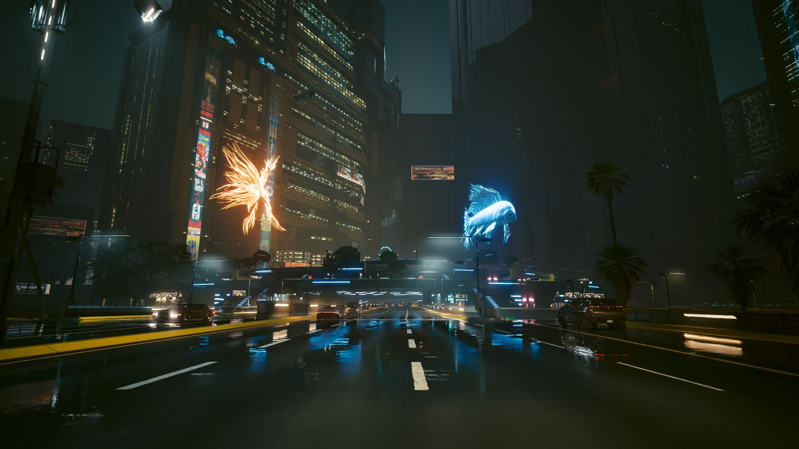
Мы собираем материалы сообщества и собственные гайды, чтобы ваш путь по Night City был проще.
Все основные и побочные квесты, концовки и важные развилки сюжета.
Сеты имплантов и прокачка под сетку, хакера, ручной бой и скрытность.
Шесть районов Night City: что посмотреть и где искать редкий лут.
Пасхалки, отсылки и секреты, которые легко пропустить при первом прохождении.
Подборка модификаций и настройка графики под слабые и мощные ПК.
Скриншоты сообщества, арты и лучшие кадры из игры в одном месте.
Город разделён на шесть ключевых районов — у каждого свои банды, стиль и опасности.
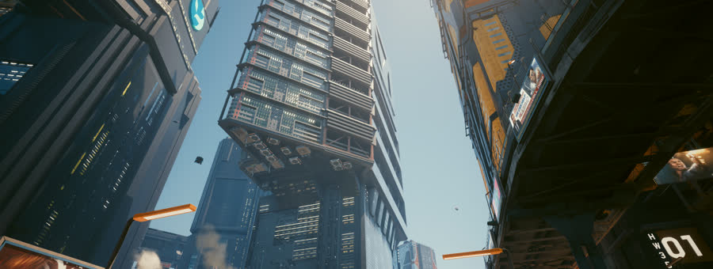
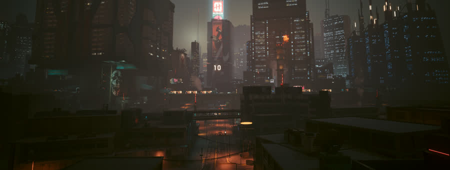
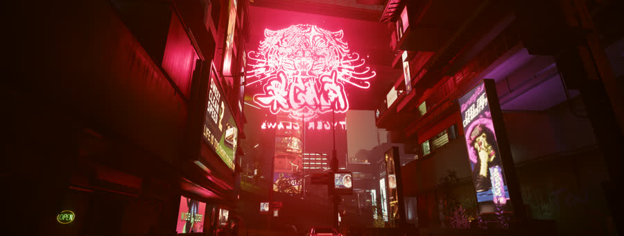
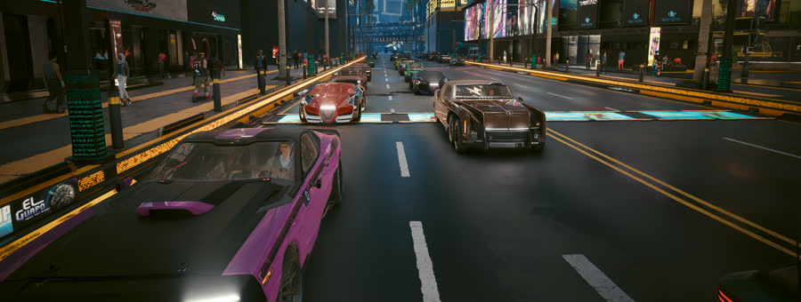
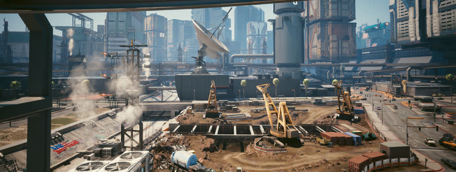
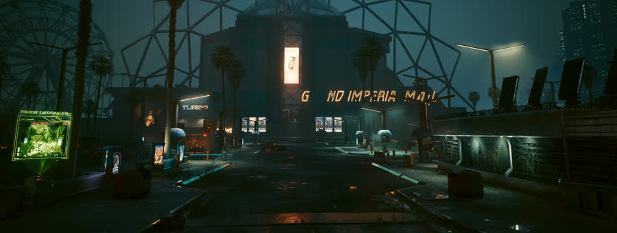
Те, кто определяет историю V — напарники, легенды и случайные союзники.
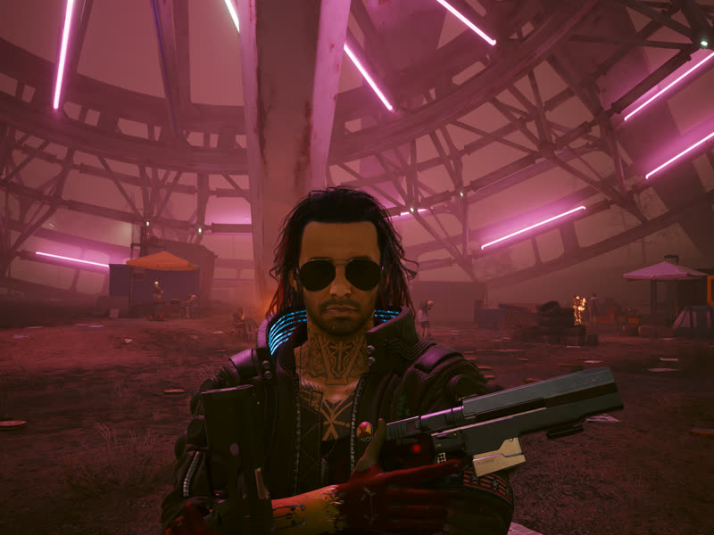
протагонист
Наёмник, в голове которого оказался биочип с Джонни.
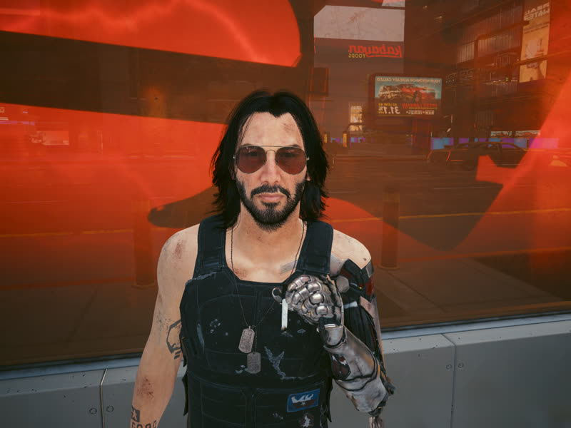
рокер-легенда
Цифровой призрак 2023 года, оживлённый на биочипе.
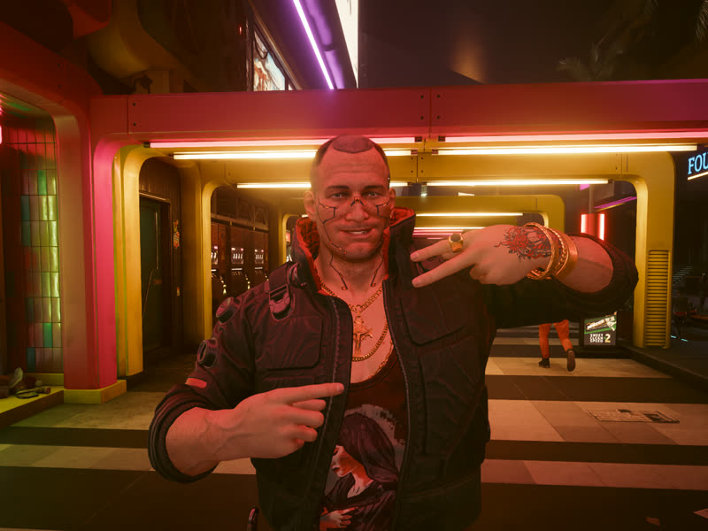
напарник
Лучший друг V, мечтающий пробиться в верхушку Night City.
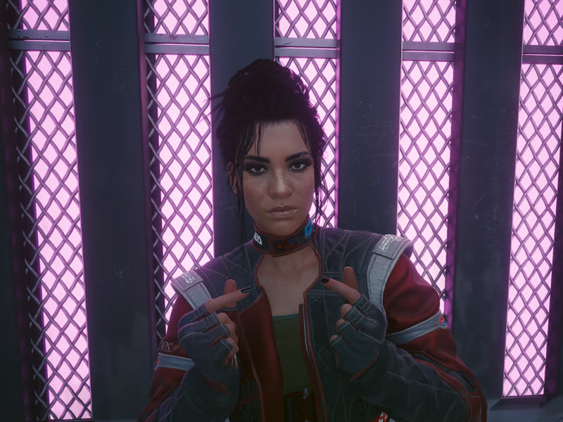
кочевница
Бывший член клана Альдекальдо, ключ к сюжетной линии пустошей.
Пять путей финала — без спойлеров: только названия и то, от чего они зависят.
path_01
Финал с кланом Альдекальдо — открывается через линию Панам.
path_02
Путь «Королевы Night City» — зависит от отношений с Джонни и Рог.
path_03
Тихий финал с Ханако Арасакой и корпоративным выбором.
path_04
Секретный вариант, для которого нужно выполнить особые условия в сюжете.
Проверьте, потянет ли ваш ПК Night City после патчей 2.x.
| Параметр | Минимальные | Рекомендуемые |
|---|---|---|
| Операционная система | Windows 10 64-bit | Windows 10 / 11 64-bit |
| Процессор | Core i7-6700 / Ryzen 5 1600 | Core i7-12700 / Ryzen 7 7800X3D |
| Оперативная память | 12 ГБ | 16 ГБ |
| Видеокарта | GeForce GTX 1060 6 ГБ | GeForce RTX 2070 SUPER / RX 5700 XT |
| Накопитель | SSD, 70 ГБ | NVMe SSD, 70 ГБ |
Скриншоты из фоторежима игры, снятые для фан-клуба.
86/100
metacritic.com · PC
Сводная оценка критиков на релизе и после обновлений.
9/10
игровые издания
«После патча 2.0 это та игра, которой она должна была быть».
80%
steam · отзывы
«Очень положительные» отзывы игроков в Steam.
Частые вопросы о сайте и об игре.
Нет. Это фанатский учебный проект. Официальные ресурсы игры — cdprojektred.com и cyberpunk.net.
Игра продаётся в Steam, GOG, Epic Games Store и на консолях. Ссылок на пиратство мы не размещаем.
Да, в разделе «Гайды» — разборы квестов, билдов и концовок. Вопросы можно задать через форму подписки.
Конечно! Отправьте через форму ниже — лучшие материалы попадают в галерею с указанием автора.
В разделе «Моды и тюнинг» — проверенные подборки для графики, геймплея и интерфейса.
Свежие гайды, обновления игры и лучшие материалы сообщества — раз в две недели, без спама.